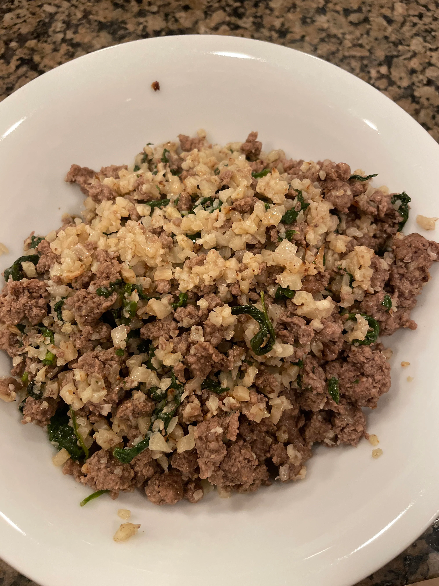

Monster Mash

One Pot Monster Mash
This is a simple, easy, and time saving recipe for a one pot monster mash. You will be able to meet most of your micro nutrient requirements and all of your macros. By following this recipe you will be able to make four meals for the day and save hours in the kitchen. All you will need is a rice cooker or instant pot and the ingredients listed below.
Ingredients
- 920 grams ground beef
- 200 grams white rice (I prefer jasmine)
- 8 large eggs
- 400 grams russet potatoes
- 1/2 of a bell pepper
- 480 ml chicken bone broth
- 240 ml water
- 20 grams iodized salt
- (optional) 150 grams spinach
Steps
- Get a rice cooker. Preferably a 6 quart Aroma.
- Cut up the bell pepper and potatoes.
- Using a food scale weigh out the ground beef into four equal balls or patties. This would be 230 grams each.
- Set the inner pot on a food scale.
- Pour 200 grams of rice into the inner pot of the rice cooker.
- Add 10 grams of the iodized salt.
- If you're adding the spinach put it on top of the rice.
- Put the meat balls, pepper, and potatoes into the pot.
- Pour in the 480ml of bone broth and 240ml of water.
- Sprinkle another 10 grams of salt on top of the food.
- Put the inner pot in the rice cooker and set it to white rice.
- Once there is steam coming out of the top of the rice cooker add the 8 eggs
- Once it is done cooking mash everything in the pot or scoop it out evenly into 4 bowls.
- Have the monster mash with other foods approved for the Vertical Diet. ex. baby carrots, almonds, greek yogurt, cheese, oranges, orange juice, cranberry juice.